Next: Bibliography Up: ManualAug2019 Previous: Continuer example: a curve Contents
The Brusselator is a system of equations intended to model the Belusov-Zhabotinsky reaction.
This is a system of reaction-diffusion equations that is known to exhibit oscillatory behavior.
The unknowns are the concentrations
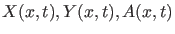 and 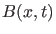 of four reactants.
Here  denotes time and 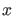 is a one-dimensional space variable normalized so that 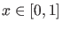.
The length of the reactor is a parameter of the problem.
In our simplified setting and are constants.
denotes time and 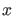 is a one-dimensional space variable normalized so that 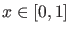.
The length of the reactor is a parameter of the problem.
In our simplified setting and are constants.
The system is described by two partial differential equations:
The approximate equilibrium solution is:
The initial values of the parameters are: , 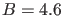, 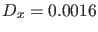, 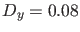 and 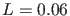. The initial solution (100) is not an equilibrium, but the continuer will try to converge to an equilibrium close to the initial solution. We use equidistant meshes. To avoid spurious solutions (solutions that are induced by the discretization but do not actually correspond to solutions of the undiscretized problem) one can vary the number of mesh points by setting the parameter 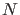. If the same solution is found for several discretizations, then we can assume that they correspond to solutions of the continuous problem.
The second order space derivative is approximated using the well-known three-points difference formula: 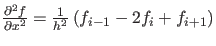, where 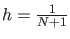, where is the number of grid points on which we discretize and . So is a parameter of the problem and 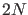 is the number of state variables (which is not fixed in this case).
The Jacobian is a sparse 5-band matrix. In the ode-file describing the problem the Jacobian is introduced as a sparse matrix. The Hessian is never computed as such but second order derivatives are computed by finite differences whenever needed. We note that MATLAB 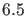 or does not provide sparse structures for 3-dimensional arrays.
| bruss.m | |
| 1 | function out = bruss |
| 2 | % |
| 3 | % Odefile of 1-d Brusselator model |
| 4 | % |
| 5 | |
| 6 | out{1} = @init; |
| 7 | out{2} = @fun_eval; |
| 8 | out{3} = @jacobian; |
| 9 | out{4} = @jacobianp; |
| 10 | out{5} = [];%@hessians; |
| 11 | out{6} = [];%@hessiansp; |
| 12 | out{7} = []; |
| 13 | out{8} = []; |
| 14 | out{9} = []; |
| 15 | |
| 16 | |
| 17 | |
| 18 | % -------------------------------------------------------------------------- |
| 19 | |
| 20 | |
| 21 | function dfdt = fun_eval(t,y,N,L) |
| 22 | |
| 23 | x = y(1:N); |
| 24 | y = y(N+1:2*N); |
| 25 | |
| 26 | A = 2; |
| 27 | B = 4.6; |
| 28 | Dx = 0.0016; |
| 29 | Dy = 0.008; |
| 30 | x0 = A; x1 = A; |
| 31 | y0 = B/A; y1 = B/A; |
| 32 | L2 = L^2; |
| 33 | h = 1/(N+1); |
| 34 | cx = (Dx/L2)/(h*h); |
| 35 | cy = (Dy/L2)/(h*h); |
| 36 | |
| 37 | dxdt = zeros(N,1); |
| 38 | dydt = zeros(N,1); |
| 39 | |
| 40 | dxdt(1) = (x0-2*x(1)+x(2))*cx + A - (B+1)*x(1) + x(1)*x(1)*y(1); |
| 41 | dxdt(N) = (x(N-1)-2*x(N)+x1)*cx + A - (B+1)*x(N) + x(N)*x(N)*y(N); |
| 42 | |
| 43 | dydt(1) = (y0-2*y(1)+y(2))*cy + B*x(1) - x(1)*x(1)*y(1); |
| 44 | dydt(N) = (y(N-1)-2*y(N)+y1)*cy + B*x(N) - x(N)*x(N)*y(N); |
| 45 | |
| 46 | for i=2:N-1 |
| 47 | dxdt(i) = (x(i-1)-2*x(i)+x(i+1))*cx + A - (B+1)*x(i) + x(i)*x(i)*y(i); |
| 48 | dydt(i) = (y(i-1)-2*y(i)+y(i+1))*cy + B*x(i) - x(i)*x(i)*y(i); |
| 49 | end |
| 50 | |
| 51 | dfdt = [dxdt; dydt]; |
| 52 | |
| 53 | % -------------------------------------------------------------------------- |
| 54 | |
| 55 | function [tspan,y0,options] = init(N) |
| 56 | tspan = [0; 10]; |
| 57 | A = 2; |
| 58 | B = 4.6; |
| 59 | |
| 60 | y0 = zeros(2*N,1); |
| 61 | |
| 62 | for i=1:N |
| 63 | y0(i) = A + 2*sin(pi*i/(N+1)); |
| 64 | y0(N+i) = B/A - 0.5*sin(pi*i/(N+1)); |
| 65 | end |
| 66 | handles = feval(@bruss); |
| 67 | options = odeset('Vectorized','on', 'Jacobian', handles(3), 'JacobianP', handles(4)); |
| 68 | |
| 69 | % -------------------------------------------------------------------------- |
| 70 | |
| 71 | function dfdxy = jacobian(t,y,N,L) |
| 72 | x = y(1:N); |
| 73 | y = y(N+1:2*N); |
| 74 | A = 2; |
| 75 | B = 4.6; |
| 76 | Dx = 0.0016; |
| 77 | Dy = 0.008; |
| 78 | x0 = A; x1 = A; |
| 79 | y0 = B/A; y1 = B/A; |
| 80 | L2 = L^2; |
| 81 | h = 1/(N+1); |
| 82 | cx = (Dx/L2)/(h*h); |
| 83 | cy = (Dy/L2)/(h*h); |
| 84 | |
| 85 | |
| 86 | % |
| 87 | % Sparse jacobian |
| 88 | % |
| 89 | A=zeros(2*N,3); |
| 90 | A(1:N-1,2)=cx; |
| 91 | A(1:N,3)=-2*cx -(B+1) + 2*x(1:N).*y(1:N); |
| 92 | A(1:N,4)=cx; |
| 93 | |
| 94 | A(N+1:2*N,2) = cy; |
| 95 | A(N+1:2*N,3) = -2*cy -x(:).*x(:); |
| 96 | A(N+2:2*N,4) = cy; |
| 97 | |
| 98 | |
| 99 | A(1:N,1) = B - 2*x(:).*y(:); |
| 100 | A(N+1:2*N,5) = x(:).*x(:); |
| 101 | |
| 102 | dfdxy = spdiags(A, [-N,-1:1,N] , 2*N, 2*N); |
| 103 | return |
| 104 | |
| 105 | % |
| 106 | % Full matrix |
| 107 | % |
| 108 | dfxdx = zeros(N,N); |
| 109 | dfydy = zeros(N,N); |
| 110 | dfxdy = zeros(N,N); |
| 111 | dfydx = zeros(N,N); |
| 112 | |
| 113 | for i=1:N |
| 114 | if i>1, dfxdx(i,i-1) = cx; end; |
| 115 | dfxdx(i,i) = -2*cx -(B+1) + 2*x(i)*y(i); |
| 116 | if i<N, dfxdx(i,i+1) = cx; end; |
| 117 | dfxdy(i,i) = x(i)*x(i); |
| 118 | |
| 119 | if i>1, dfydy(i,i-1) = cy; end; |
| 120 | dfydy(i,i) = -2*cy -x(i)*x(i); |
| 121 | if i<N, dfydy(i,i+1) = cy; end; |
| 122 | dfydx(i,i) = B - 2*x(i)*y(i); |
| 123 | end |
| 124 | |
| 125 | dfdxy = [ dfxdx, dfxdy; dfydx, dfydy ]; |
| 126 | |
| 127 | % -------------------------------------------------------------------------- |
| 128 | |
| 129 | function dfdp = jacobianp(t,y,N,L) |
| 130 | x = y(1:N); |
| 131 | y = y(N+1:2*N); |
| 132 | A = 2; |
| 133 | B = 4.6; |
| 134 | Dx = 0.0016; |
| 135 | Dy = 0.008; |
| 136 | x0 = A; x1 = A; |
| 137 | y0 = B/A; y1 = B/A; |
| 138 | L2 = L^2; |
| 139 | h = 1/(N+1); |
| 140 | cx = (Dx/L2)/(h*h); |
| 141 | cy = (Dy/L2)/(h*h); |
| 142 | kx = (-2/L)*cx; |
| 143 | ky = (-2/L)*cy; |
| 144 | |
| 145 | Sx = zeros(N,1); |
| 146 | Sy = zeros(N,1); |
| 147 | |
| 148 | Sx(1) = kx*(x0-2*x(1)+x(2)); |
| 149 | Sy(1) = ky*(y0-2*y(1)+y(2)); |
| 150 | |
| 151 | Sx(N) = kx*(x(N-1)-2*x(N)+x1); |
| 152 | Sy(N) = ky*(y(N-1)-2*y(N)+y1); |
| 153 | |
| 154 | i=2:N-1; |
| 155 | Sx(i) = kx*(x(i-1)-2*x(i)+x(i+1)); |
| 156 | Sy(i) = ky*(y(i-1)-2*y(i)+y(i+1)); |
| 157 | |
| 158 | dfdp = [ zeros(2*N,1) [Sx;Sy] ]; |
| 159 | |
| 160 | % -------------------------------------------------------------------------- |
| bruss.m | |
>N = 20; L = 0.06;
>handles = feval(@bruss);
>[t,x0,options] = feval(handles{1},N);
It sets the number of state variables to and makes an initial vector 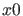 of length containing the values of the approximate equilibrium solution.
Now we inform the pde_1 curve that the second parameter of bruss.m is the active parameter and what the default values of the other parameters are. We also set some options.
>[x1,v1] = init_EP_EP(@bruss,x0,[N;L], [2]); >opt = contset;opt=contset(opt,'MinStepsize', 1e-5); >opt=contset(opt,'MaxCorrIters', 10); >opt=contset(opt,'MaxNewtonIters', 20); >opt=contset(opt,'FunTolerance', 1e-3); >opt=contset(opt,'Singularities',1); >opt=contset(opt,'MaxNumPoints',500); >opt=contset(opt,'Locators',[]);We start the continuation process by the statement
cpl(x,v,s,[41;20]);we can plot the 20th component of as a function of (which is the 41th continuation variable), see Figure 33.
The above test can be executed by running testbrusselator; this file is in the directory Testruns.